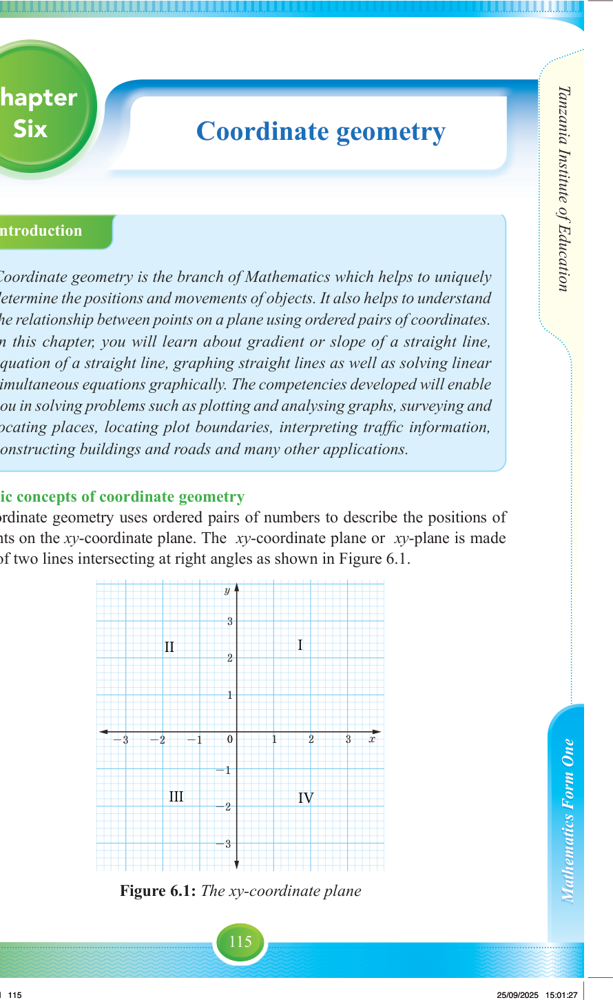

Introduction
Coordinate geometry is the branch of Mathematics which helps to uniquely determine the positions and movements of objects. It also helps to understand the relationship between points on a plane using ordered pairs of coordinates. In this chapter, you will learn about gradient or slope of a straight line, equation of a straight line, graphing straight lines as well as solving linear simultaneous equations graphically. The competencies developed will enable you in solving problems such as plotting and analysing graphs, surveying and locating places, locating plot boundaries, interpreting traffic information, constructing buildings and roads and many other applications.
Basic concepts of coordinate geometry
Coordinate geometry uses ordered pairs of numbers to describe the positions of points on the xy-coordinate plane. The xy-coordinate plane or xy-plane is made up of two lines intersecting at right angles as shown in Figure 6.1.

Figure 6.1: The xy-coordinate plane